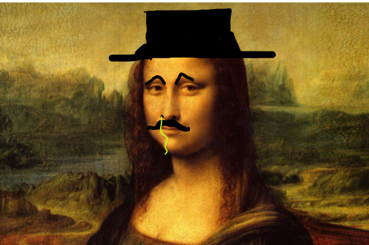

El arte es muy importante para la
vida de las personas
ayuda a expresar las emociones.
Para aprender a dibujar personas lo
primero que tenemos que hacer es
aprender a dividir las cosas en figuras
geometricas, despues de eso, debemos aprender
algo de anatomia de diferentes animales
empezando por los huesos, siguiendo por
los musculos y acabando con la carne,
no olvides usar plataformas como pinterest para
apoyarte.
Despues de eso empieza a descomponer la anatomia
humana para poder dibujar en el estilo que te
acomode como por ejemplo hacer el cuerpo desproporcional
a la cabeza.
La anatomia es el fundamento de cualquier artista para mejorar si de verdad
quieres aprender a dibujar debes saber sobre la anatomia y practicrala ya que esta te dara un amplio
conocimiento sobre el cuerpo humano y sus musculos, la anatomia humana viene desde hueso, musculo y piel,
te recomendamos que aprendas la anatomia de la cabeza hasta el final porque para mi parecer es la mas complicada.
https://definicion.de/arte/
La anatomia nos dara los fundamentos necesarios para ser grandes artistas y poder crear una carrera del arte,
es muy importante que recordemos que la anatomia puede ser tediosa y no se aprende en un dia es un arte que se logra despues
de tiempo de practica horas de esfuerso y un poco de pasion, si uno no esta realmente dispuesto a seguir adelante dibujando
no lo va a lograr es por eso que necesitas estar apasionado.
Para dibujar anatomia te recomendamos que busces referencias en internet y que uses modelos 3d ya que te ayudaran a ver
los musculos desde sus diferentes angulos a diferencia de otras artes el dibujar es bastante barato y realmente no necesitas
mucho lo importante es ser creativo y seguir adelante con los proyectos que uno tiene y acabarlos ya que habeces uno no acaba sus dibujos
lo cual es un muy grave error que no se deberia de hacer.
La anatomia puede ser compleja pero con la practica podras ver los resultados trata de ir de poco en poco para no desesperarte
y no olvides que la anatomia de los animales tiene tambien sus relaciones con las del humano, por ejemplo el chimpanse
que tiene una estructura osea muy similar y otros tipos de monos tambien recuerda seguir luchando y no rendirte.
Colores
Se conoce como Teoría del color a un conjunto de reglas básicas que rigen la mezcla
de colores para conseguir efectos deseados, mediante la combinación de colores o pigmentos.
el color es lo que nos da luz lo que nos ayuda a expresarnos por si solo el color es un arte es por
eso que uno tiene que aprender a usarla, y la manera mas facil es con la rueda cromatica.
https://concepto.de/teoria-del-color/
La rueda cromatica es una rueda que tiene todos los colores, se le llaman opuestos a los colores
cuando un color se encuentra del otro lado de la rueda por ejemplo el amarrillo y el morado los cuales
no tienen ninguna relacion al poner estos dos colores juntos pueden hacer que la personas se quede viendo
dos partes de una obra ya que lo atraeran las dos por el contraste.
La teoria del color puede ser complicada por eso te recomiendo que la estudies mucho si aprendes a usar color podras
darle mas vida a tus cuadros y seran mas realistas te recomendamos que veas videos de youtube y que no inicies desde
cero porque hay bastantes cosas que podrias aprovechar de esta comunidad.
Los colores pueden reflejar sentimientos y cada uno tiene uns significado, por ejemplo el verde
rempresenta la naturaleza, el rosa la vida, el amarrillo la felicidad, el rojo la violencia, el negro el poder,
el blanco la paz, el azul la confianza y el cafe la naturaleza tambien, es muy importante que te aprendas los significados de
estos para que puedas darle palabaras a ttu obra.
Utiles
Hay muchos utiles pero para pintar no necesitas muchos, hay muchos utiles para dibujar entre ellos estan:
el lapiz, la goma, el papel, el pincel, los pigmentos de colores, los colores las crallolas, etc. Pero lo que enrealidad
necesitas es un lapiz y un papel el arte no pide mucho a la personas lo unico que si le pide es que este tenga creatividad
y un poco de interes de esa manera cualquiera puede dibujar, igualmente vamos hablar sobre estos utiles y cuales recomiendo.
https://concepto.de/teoria-del-color/
Yo recomiendo mucho la goma el papel resistente a agua y las acuarelas, esto es porque para hacer
el sketch o la primera parte del dibujo necesitamo algo que se pueda quitar lo cual es el lapiz recomiendo un prismacolor
hb y un prismacolor 6b para que puedas dibujar fuerte y tambien bajito, es muy importante que aprendas a soltar la mano
con esta herramienta o no llegaras a mucho.
Tambien puedes usar las acuarelas las cuales recomiendo porque estas muestran un excelente color a la vez que son faciles de usar
, la gran mayoria de las acuarelas son baratas y de calidad entonces agrra cualquiera pero si ten cuidado con la brocha que usas que
esa si importa, segun vayas mejorando tambien deberian tus utiles pero todo con calma no es necesario tener algo de 10000 pesos
para dibujar una obra maestra.
En resumen recomiendo lapiz y acuarela recuerda que el proceso es primero el esboso o sketch luego el line art con una pluma o con
las mismas acuarelas despues de eso borra el lapiz que quede con la pluma usando una goma y por ultimo pinta con la acuarela,
suabemente y con mucha calma y asi es como se hace un dibujo, no te preocupes si la regaste en un paso, el arte es algo
de practica y no se adquiere en un solo dia.
Muchas Gracias por visitarnos, ojala te volvamos a ver aqui, tenemos de todo
El arte es cualquier cosa porque es muy subjetivo, pero yo creo que el arte es algo que te causa un sentimiento, puede ser uno absurdo o uno fuerte, a mi me gusta el oleo.
Estoy muy deacuerdo con el creador del video porque su opinion sobre el arte es la más objetiva y dice cosas ciertas como que el arte es el significado que le des.
MEMES de arte
17/02/22
Memes de arte
Vamos a ver un meme artistico creado por su servidor estara en la parte de abajo, la inspiracion vino cuando vi
la obra LHOOQ que es una pintura dadaista de esta y desidi hacer lo mismo pero con mi propi estilo, espero que les
guste.

La monaliza con bigote
Blog creado en nombre delColegio AlamosLas opiniones contenidas en este proyecto pertenecen a los autores de cada entrada.

 Tipos de Perros
Tipos de Perros Tipos de Perros
Tipos de Perros
 Tipos de Perros
Tipos de Perros.jpg)
.png) MEMES de arte
MEMES de arte